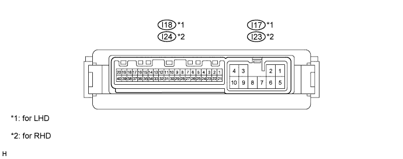

POWER MIRROR CONTROL SYSTEM (w/ Retract Mirror) > TERMINALS OF ECU |
| CHECK OUTER MIRROR CONTROL ECU |

for LHD:
Disconnect the I17 ECU connector.
Measure the voltage and resistance of the wire harness side connector.
| Terminal No. (Symbol) | Wiring Color | Terminal Description | Condition | Specified Condition |
| I17-9 (GND) - Body ground | W-B - Body ground | Ground | Always | Below 1 Ω |
| I17-3 (B) - I17-9 (GND) | R - W-B | Battery (ECU power source) | Always | 11 to 14 V |
| I17-4 (ACC) - I17-9 (GND) | GR - W-B | ACC power supply | Engine switch off | Below 1 V |
| Engine switch on (ACC) | 11 to 14 V |
Reconnect the I17 ECU connector.
Measure the voltage of the connector.
| Terminal No. (Symbol) | Wiring Color | Terminal Description | Condition | Specified Condition |
| I17-1 (RL) - I17-9 (GND) | LG - W-B | Mirror retract motor output (retracting) | Mirror retract switch on (Outer rear view mirror LH retracting) | 10.3 to 14 V |
| I17-2 (FL) - I17-9 (GND) | SB - W-B | Mirror retract motor output (returning) | Mirror retract switch off (Outer rear view mirror LH returning) | 10.3 to 14 V |
| I17-5 (RR) - I17-9 (GND) | BR - W-B | Mirror retract motor output (retracting) | Mirror retract switch on (Outer rear view mirror RH retracting) | 10.3 to 14 V |
| I17-6 (FR) - I17-9 (GND) | R - W-B | Mirror retract motor output (returning) | Mirror retract switch off (Outer rear view mirror RH returning) | 10.3 to 14 V |
| I18-18 (M+L) - I17-9 (GND) | Y - W-B | Mirror motor output | Mirror master switch L, Mirror control switch off | Below 1 V |
| Mirror master switch L, Mirror control switch up or left | Below 1 V | |||
| Mirror master switch L, Mirror control switch down or right | 10 to 14 V | |||
| I18-19 (MHL) - I17-9 (GND) | G - W-B | Mirror motor output | Mirror master switch L, Mirror control switch off | Below 1 V |
| Mirror master switch L, Mirror control switch right | Below 1 V | |||
| Mirror master switch L, Mirror control switch left | 10 to 14 V | |||
| I18-20 (MVL) - I17-9 (GND) | L - W-B | Mirror motor output | Mirror master switch L, Mirror control switch off | Below 1 V |
| Mirror master switch L, Mirror control switch down | Below 1 V | |||
| Mirror master switch L, Mirror control switch up | 10 to 14 V | |||
| I18-38 (M+R) - I17-9 (GND) | Y - W-B | Mirror motor output | Mirror master switch R, Mirror control switch off | Below 1 V |
| Mirror master switch R, Mirror control switch up or left | Below 1 V | |||
| Mirror master switch R, Mirror control switch down or right | 10 to 14 V | |||
| I18-39 (MHR) - I17-9 (GND) | G - W-B | Mirror motor output | Mirror master switch R, Mirror control switch off | Below 1 V |
| Mirror master switch R, Mirror control switch right | Below 1 V | |||
| Mirror master switch R, Mirror control switch left | 10 to 14 V | |||
| I18-40 (MVR) - I17-9 (GND) | R - W-B | Mirror motor output | Mirror master switch R, Mirror control switch off | Below 1 V |
| Mirror master switch R, Mirror control switch down | Below 1 V | |||
| Mirror master switch R, Mirror control switch up | 10 to 14 V | |||
| I18-4 (VSR) - I18-3 (LE1) | GR - BR | Vertical direction position signal | Mirror master switch R or L Mirror control switch up or down | Voltage fluctuates between 0 and 5 V |
| I18-5 (HSRL) - I18-3 (LE1) | L - BR | Horizontal direction position signal | Mirror master switch R or L Mirror control switch right or left | Voltage fluctuates between 0 and 5 V |
| I18-2 (LVC) - I18-3 (LE1) | B - BR | Power source for mirror position sensor | Engine switch off during sleep mode | Below 1 V |
| Engine switch on (IG) | 4.7 to 5.5 V | |||
| I18-24 (VSRR) - I18-23 (RE1) | GR - BR | Vertical direction position signal | Mirror master switch R or L Mirror control switch up or down | Voltage fluctuates between 0 and 5 V |
| I18-25 (HSRR) - I18-23 (RE1) | W - BR | Horizontal direction position signal | Mirror master switch R or L Mirror control switch right or left | Voltage fluctuates between 0 and 5 V |
| I18-22 (RVC) - I18-23 (RE1) | B - BR | Power source for mirror position sensor | Engine switch off during sleep mode | Below 1 V |
| Engine switch on (IG) | 4.7 to 5.5 V |
for RHD:
Disconnect the I23 ECU connector.
Measure the voltage and resistance of the wire harness side connector.
| Terminal No. (Symbol) | Wiring Color | Terminal Description | Condition | Specified Condition |
| I23-9 (GND) - Body ground | W-B - Body ground | Ground | Always | Below 1 Ω |
| I23-3 (B) - I17-9 (GND) | R - W-B | Battery (ECU power source) | Always | 11 to 14 V |
| I23-4 (ACC) - I17-9 (GND) | GR - W-B | ACC power supply | Engine switch off | Below 1 V |
| Engine switch on (ACC) | 11 to 14 V |
Reconnect the I23 ECU connector.
Measure the voltage of the connector.
| Terminal No. (Symbol) | Wiring Color | Terminal Description | Condition | Specified Condition |
| I23-1 (RL) - I23-9 (GND) | BR - W-B | Mirror retract motor output (retracting) | Mirror retract switch on (Outer rear view mirror LH retracting) | 10.3 to 14 V |
| I23-2 (FL) - I23-9 (GND) | R - W-B | Mirror retract motor output (returning) | Mirror retract switch off (Outer rear view mirror LH returning) | 10.3 to 14 V |
| I23-5 (RR) - I23-9 (GND) | LG - W-B | Mirror retract motor output (retracting) | Mirror retract switch on (Outer rear view mirror RH retracting) | 10.3 to 14 V |
| I23-6 (FR) - I23-9 (GND) | SB - W-B | Mirror retract motor output (returning) | Mirror retract switch off (Outer rear view mirror RH returning) | 10.3 to 14 V |
| I24-18 (M+L) - I23-9 (GND) | Y - W-B | Mirror motor output | Mirror master switch L, Mirror control switch off | Below 1 V |
| Mirror master switch L, Mirror control switch up or left | Below 1 V | |||
| Mirror master switch L, Mirror control switch down or right | 10 to 14 V | |||
| I24-19 (MHL) - I23-9 (GND) | G - W-B | Mirror motor output | Mirror master switch L, Mirror control switch off | Below 1 V |
| Mirror master switch L, Mirror control switch right | Below 1 V | |||
| Mirror master switch L, Mirror control switch left | 10 to 14 V | |||
| I24-20 (MVL) - I23-9 (GND) | R - W-B | Mirror motor output | Mirror master switch L, Mirror control switch off | Below 1 V |
| Mirror master switch L, Mirror control switch down | Below 1 V | |||
| Mirror master switch L, Mirror control switch up | 10 to 14 V | |||
| I24-38 (M+R) - I23-9 (GND) | Y - W-B | Mirror motor output | Mirror master switch R, Mirror control switch off | Below 1 V |
| Mirror master switch R, Mirror control switch up or left | Below 1 V | |||
| Mirror master switch R, Mirror control switch down or right | 10 to 14 V | |||
| I24-39 (MHR) - I23-9 (GND) | G - W-B | Mirror motor output | Mirror master switch R, Mirror control switch off | Below 1 V |
| Mirror master switch R, Mirror control switch right | Below 1 V | |||
| Mirror master switch R, Mirror control switch left | 10 to 14 V | |||
| I24-40 (MVR) - I23-9 (GND) | L - W-B | Mirror motor output | Mirror master switch R, Mirror control switch off | Below 1 V |
| Mirror master switch R, Mirror control switch down | Below 1 V | |||
| Mirror master switch R, Mirror control switch up | 10 to 14 V | |||
| I24-4 (VSR) - I24-3 (LE1) | GR - BR | Vertical direction position signal | Mirror master switch R or L Mirror control switch up or down | Voltage fluctuates between 0 and 5 V |
| I24-5 (HSRL) - I24-3 (LE1) | W - BR | Horizontal direction position signal | Mirror master switch R or L Mirror control switch right or left | Voltage fluctuates between 0 and 5 V |
| I24-2 (LVC) - I24-3 (LE1) | B - BR | Power source for mirror position sensor | Engine switch off during sleep mode | Below 1 V |
| Engine switch on (IG) | 4.7 to 5.5 V | |||
| I24-24 (VSRR) - I24-23 (RE1) | GR - BR | Vertical direction position signal | Mirror master switch R or L Mirror control switch up or down | Voltage fluctuates between 0 and 5 V |
| I24-25 (HSRR) - I24-23 (RE1) | L - BR | Horizontal direction position signal | Mirror master switch R or L Mirror control switch right or left | Voltage fluctuates between 0 and 5 V |
| I24-22 (RVC) - I24-23 (RE1) | B - BR | Power source for mirror position sensor | Engine switch off during sleep mode | Below 1 V |
| Engine switch on (IG) | 4.7 to 5.5 V |
| CHECK MAIN BODY ECU |

Disconnect the 2B, 2A and 2D ECU connectors.
Measure the voltage and resistance of the wire harness side connectors.
| Terminal No. (Symbol) | Wiring Color | Terminal Description | Condition | Specified Condition |
| 2B-20 (BATB) - Body ground | L - Body ground | BATB power supply | Always | 11 to 14 V |
| 2A-1 (ACC) - Body ground | B - Body ground | ACC power supply | Always | 11 to 14 V |
| 2A-1 (IG) - Body ground | B - Body ground | IG power supply | Always | 11 to 14 V |
| 2D-62 (GND2) - Body ground | W-B - Body ground | Body ground | Always | Below 1 Ω |
Reconnect the 2B, 2A and 2D ECU connectors.
Measure the voltage of the connectors.
| Terminal No. (Symbol) | Wiring Color | Terminal Description | Condition | Specified Condition |
| E2-6 (RET) - 2D-62 (GND2) | BR - W-B | Mirror retract motor output (retracting) | Mirror retract switch on | 11 to 14 V |
| E2-6 (RET) - 2D-62 (GND2) | BR - W-B | Mirror retract motor output (returning) | Mirror retract switch off | Below 1 V |
| E1-12 (MIRS) - E1-2 (MIRE) | LG - BR | Mirror motor output | Mirror master switch L | 11 to 14 V |
| Mirror master switch R | 11 to 14 V | |||
| Mirror master switch off | Below 1 V | |||
| E1-11 (MIRB) - E1-2 (MIRE) | GR - BR | Mirror motor output | Mirror master switch L, Mirror control switch right | 11 to 14 V |
| Mirror master switch L, Mirror control switch left | 11 to 14 V | |||
| Mirror master switch L, Mirror control switch down | 11 to 14 V | |||
| Mirror master switch L, Mirror control switch up | 11 to 14 V | |||
| Mirror master switch R, Mirror control switch right | 11 to 14 V | |||
| Mirror master switch R, Mirror control switch left | 11 to 14 V | |||
| Mirror master switch R, Mirror control switch down | 11 to 14 V | |||
| Mirror master switch R, Mirror control switch up | 11 to 14 V | |||
| Mirror master switch off | Below 1 V |